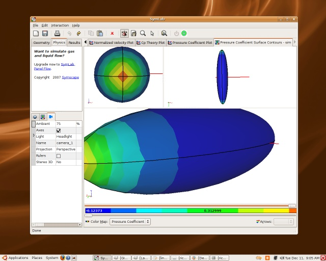

The Linux Desktop and Computer-Aided Engineering
Is the Linux desktop ready for Computer-Aided Engineering (CAE)? Or, more aptly, is CAE ready for the Linux desktop?
Caedium on Ubuntu Linux
Linux vs Windows
Debate has raged over whether the Linux desktop is ready for prime-time to take on the mighty Microsoft Windows franchise. But there is little debate over the fact that the Linux operating system (OS) is now a mature and stable platform, as its dominance in High-Performance Computing (HPC) clusters and web servers demonstrates. The latest versions of the 2 main Linux desktop window managers, GNOME and KDE, offer good GUIs that are the equal to anything on Windows.
The productivity tools available under Linux, such as office applications (e.g., OpenOffice) and web browsers (e.g., Firefox), are also competitive in features to those offered under Windows. The Linux advantage is compelling when you consider that most of these desktop applications are free. This fact has not been lost on some European and Asian government agencies that are now moving over to the Linux desktop.
For the creative types out there, Linux offers GIMP, Inkscape and Blender that are good alternatives for Photoshop, CorelDraw and 3ds Max. And, for those precious leisure hours, Linux has the full gambit of casual games, such as Mahjongg. The only real weakness that Linux suffers is a lack of the latest 3D games, where it is a poor cousin to the games consoles and Windows.
3D accelerated graphics was a Linux weakness, but not anymore. The big 2 graphics card chip suppliers, ATI and Nvidia, have made big strides in supplying reliable drivers for Linux.
CAE Under Linux
So how does Linux fare in the CAE arena? The are vendors that offer Linux versions of their software, such as ALGOR and ANSYS, but there are many more that don't. The big CAD players such as AutoCAD and Solidworks only support Windows. At one time a lonely CAE application on Linux without office productivity tools for writing reports was hard to justify, but not any more. As we've seen, the productivity tools available for Linux are the match of any on Windows. Now an engineer can perform an entire project using Linux as long as the CAE tools are there too.
Of the CAE vendors that do offer CAE tools for Linux many still use clunky installers that only support 'official Linux distros' (read Redhat and SUSE) and even then don't integrate with the leading desktop managers by associating their application with their native file types and providing a launch menu. The look and feel of these CAE applications typically mimics a time when Motif was the leading GUI standard - enough said. Then there's the license manager setup and configuration, which is another painful experience no matter what platform you find yourself on.
Another Way
There is another way and it comes from using the latest development tools. A cross-platform GUI toolkit that supports the native GUI controls of the underlying desktop manager, such as wxWidgets, ensures that the same code base can serve multiple platforms and maintain the latest native look and feel. Autopackage is a modern Linux installer (and uninstaller) with a Windows-like GUI that provides file associations and application menu entries for either KDE or GNOME, without locking you into a specific Linux distro.
We, here at Symscape, believe that there are compelling reasons to consider Linux for CAE and we will shortly release a native Linux version of Caedium and its add-ons (e.g., Caedium Professional) using wxWidgets. Caedium will also use the Autopackage installer so you can expect an easy setup, integration with either the KDE or GNOME desktops, and an automated update process. Oh yeah, and no license manager process to configure.
So is the Linux desktop ready for CAE? Most definitely, yes.
Is CAE ready for Linux? I can't speak for the rest of the industry, but here at Symscape we are ready - just watch this space.
Feedback
Questions? Ideas? Problems?

Recent blog posts
- CFD Simulates Distant Past
- Background on the Caedium v6.0 Release
- Long-Necked Dinosaurs Succumb To CFD
- CFD Provides Insight Into Mystery Fossils
- Wind Turbine Design According to Insects
- Runners Discover Drafting
- Wind Tunnel and CFD Reveal Best Cycling Tuck
- Active Aerodynamics on the Lamborghini Huracán Performante
- Fluidic Logic
- Stonehenge Vortex Revealed as April Fools' Day Distortion Field
 Get our Blog feed
Get our Blog feed
Comments
Caedium on Linux
Caedium and its add-ons (such as Caedium Professional) are now available on Linux. Find out more at "Caedium v1.2 Released for Linux and Windows."